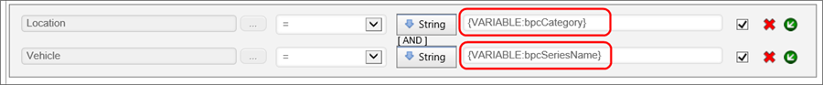
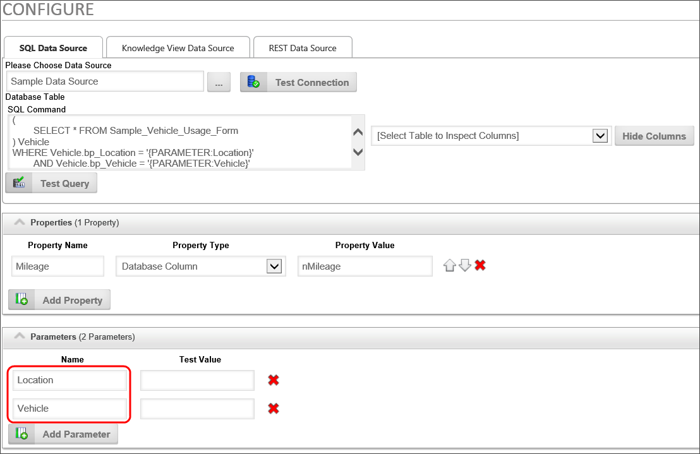
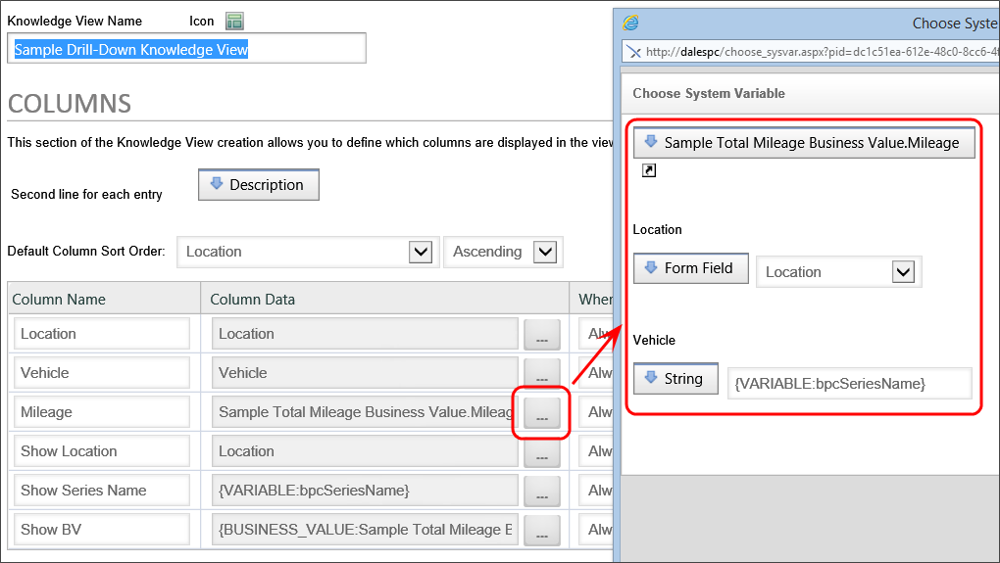

You can set a drill down target that will appear when you click on the data series. You can choose to show the drill down data in a content object such as a Knowledge View, or at a custom URL. If you choose a Content Object for the drill-down data, the Content Picker will appear to enable you to select the desired object. Similarly, if you choose a custom URL, a text box will appear, into which you can type the URL for the Drill down target. For users of Process Director v5.26 or higher, the drilldown URL can contain system variables, which will be parsed and replaced by the appropriate text at run-time.
Additionally, you can direct where the drill down object will appear by selecting it from the Drill down opens dropdown that offers the following options:
- Popup: A popup window will display the drill down object.
- Replace: The current chart will be replaced in its location by the drilldown object.
- Above: A split screen will appear, displaying the drill down object above the original chart.
- Below: A split screen will appear, displaying the drill down object below the original chart.
- Left: A split screen will appear, displaying the drill down object to the left of the original chart.
- Right: A split screen will appear, displaying the drill down object to the right of the original chart.
- Portlet 1: If the original chart appears in a workspace portlet, the object in Portlet 1 will be replaced by the drill down object.
- Portlet 2: If the original chart appears in a workspace portlet, the object in Portlet 2 will be replaced by the drill down object.
- Portlet 3: If the original chart appears in a workspace portlet, the object in Portlet 3 will be replaced by the drill down object.
- Portlet 4: If the original chart appears in a workspace portlet, the object in Portlet 4 will be replaced by the drill down object.
 If you select a portlet that doesn't exist in the workspace, the drill down object will appear in a popup window.
If you select a portlet that doesn't exist in the workspace, the drill down object will appear in a popup window.
When using the Chart in a Dashboard instead of a Workspace, the "portlet" selections above can also be used to open a Dashboard portlet as the target by configuring the Name property of the Dashboard portlet to match the portlet you select in the Drill down target property of the chart series. For example, if you select the "Portlet 1" selection from the Drill down Target dropdown, you can change the Name property of another Dashboard portlet to "Portlet 1"and the renamed portlet will be used as the dropdown target for the chart series.
When using the drill-down feature of a chart series, the Chart object can pass a series of variables to the drill-down object. For example, you may want to use a Knowledge View as a Drill-Down object, so that when you click on a chart's data series, Process Director opens a Knowledge View containing a logical view of the series data. In order for this to work properly, you must pass the appropriate variables to the Knowledge View's to filter the data. The Chart, therefore, passes the following variables to drill-down objects.
bpcCategory: The Category of a Data Series, taken from the Group By field, if any.
bpcSeriesType: The Series Type of a chart Data Series, i.e., Bar Column, Pie, etc.
bpcSeriesName: The Series Name of a chart Data Series. This will be the name of the series from the Series Name property if you've given the series a name, or the field name of the series if you've not entered a Series Name. This is the value that is displayed in the Chart's Legend for the series.
bpcValue: The value of the Data Series.
bpcPercentage: The percentage value of the Data Series in decimal format. This variable is only available with Pie, Doughnut and 100% Stacked charts.
 Sometimes, variables must be passed through multiple objects before reaching a Knowledge View, or other object. For instance, you may have a Form that calls a Chart, which, in turn, calls a Knowledge View via a drill-down. The data on the Form is passed to the Chart via a variable that is accessed using the normal
Sometimes, variables must be passed through multiple objects before reaching a Knowledge View, or other object. For instance, you may have a Form that calls a Chart, which, in turn, calls a Knowledge View via a drill-down. The data on the Form is passed to the Chart via a variable that is accessed using the normal {VAR:ParmName} syntax. However, when the chart does a drill-down to a Knowledge View, the Knowledge View does not have access to the original {VAR:ParmName} variable. Instead you need to append two underscores and the number "2" (__2) to the variable name, e.g. {VAR:ParmName__2}. When you do so, Process Director treats the "{VAR:ParmName__2}" in the in the Knowledge View as a pointer to the original value for {VAR:ParmName}, so that the proper value is automatically available to the Knowledge View.
Drill-down Variables Implementation Example
Let's assume that we want to use a Knowledge View as the data source for our charts. Any of the variables listed above can be used directly in the Filter tab of a Knowledge View as variables. Here's a simple example:

The Chart will pass the variable values automatically, and a simple Knowledge View will return the correct data based on the filters that get passed via the variables.
But, now let's look at a more complex scenario. For this next example, let's assume we have a Knowledge View that returns some information about a fleet of vehicles. As part of this information, the Knowledge View has a Mileage column for each vehicle the Business Value returns. This Mileage column gets its data from a Business Value that returns the mileage for a specific vehicle. The Business Value has two parameters, the Location and the Vehicle, from which it determines what vehicle to use to return that vehicle's mileage to the Knowledge View column. The underlying Business Value for the Mileage column might be configured like this:

So, how do we make this return the proper data to the Knowledge View's Mileage column?
In the Columns tab of the Knowledge View, when you configure the Business Value to use for the Mileage column, you can use a Chart Variable as one of the Business Value's parameters, as shown below.

The Chart will pass the bpcSeriesName variable to the Knowledge View, which will, in turn, pass it along to the underlying Business Value as a parameter, so that the mileage for the specified vehicle is returned from the Business Value to populate the Mileage column.